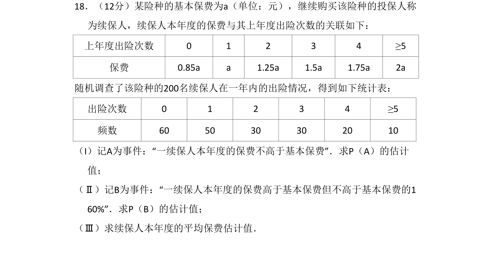
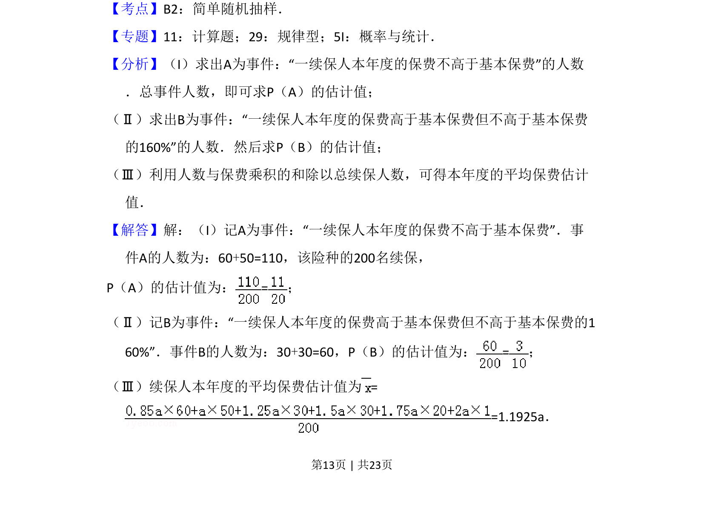
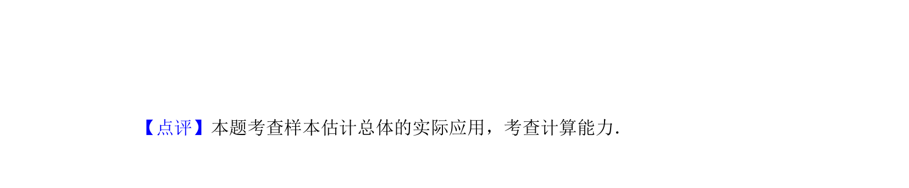

考点：简单随机抽样 频率估计概率 加权平均数

根据出险频数表估计保费概率及加权平均保费


📄 原 PDF 第 13 页：
素材/真题/吉林/2008-2024·（吉林）数学高考真题/2016年高考数学试卷（文）（新课标Ⅱ）（解析卷）.pdf
18．（12分）某险种的基本保费为a（单位：元），继续购买该险种的投保人称 为续保人，续保人本年度的保费与其上年度出险次数的关联如下： 上年度出险次数 0 1 2 3 4 ≥5 保费 0.85a a 1.25a 1.5a 1.75a 2a 随机调查了该险种的200名续保人在一年内的出险情况，得到如下统计表： 出险次数 0 1 2 3 4 ≥5 频数 60 50 30 30 20 10 （I）记A为事件：“一续保人本年度的保费不高于基本保费”．求P（A）的估计 值； （Ⅱ）记B为事件：“一续保人本年度的保费高于基本保费但不高于基本保费的1 60%”．求P（B）的估计值； （Ⅲ）求续保人本年度的平均保费估计值．
【考点】B2：简单随机抽样．菁优网版权所有 【专题】11：计算题；29：规律型；5I：概率与统计． 【分析】（I）求出A为事件：“一续保人本年度的保费不高于基本保费”的人数 ．总事件人数，即可求P（A）的估计值； （Ⅱ）求出B为事件：“一续保人本年度的保费高于基本保费但不高于基本保费 的160%”的人数．然后求P（B）的估计值； （Ⅲ）利用人数与保费乘积的和除以总续保人数，可得本年度的平均保费估计 值． 【解答】解：（I）记A为事件：“一续保人本年度的保费不高于基本保费”．事 件A的人数为：60+50=110，该险种的200名续保， P（A）的估计值为：=； （Ⅱ）记B为事件：“一续保人本年度的保费高于基本保费但不高于基本保费的1 60%”．事件B的人数为：30+30=60，P（B）的估计值为：=； （Ⅲ）续保人本年度的平均保费估计值为= =1.1925a．